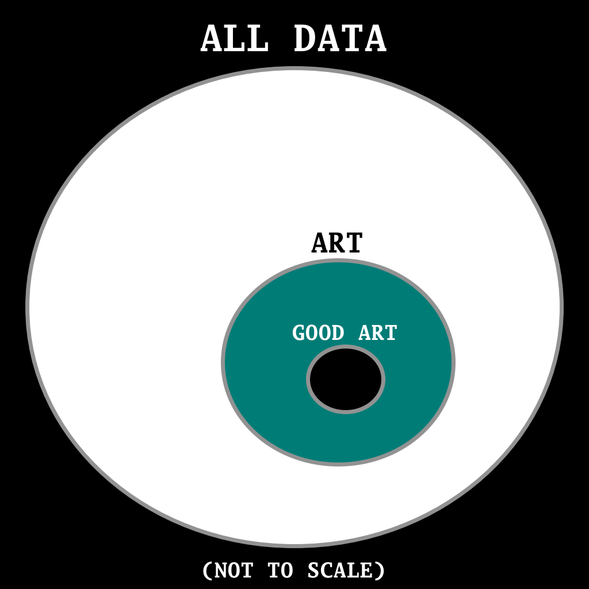

Human Thoughts about Generative Artificial Intelligence
The Same Search Space
The set of all data (all possible combinations of letters, numbers, or binary data. The representation isn’t critical) contains a subset of the data that we call art. Within the subset of art, is yet another subset called good art.

Whether the searcher of that data set is monkeys hitting typewriters, Shakespeare, random number generators, artists, me, you, or generative AI, the data set being searched is the same. The method of searching may be different, but when the proverbial monkeys eventually recreate Hamlet, it isn’t going to be any less Hamlet just because the typewriter monkeys discovered it too. If an LLM recreates Hamlet, it doesn’t suddenly render the original work soulless.
For hobby artists, generative AI can fill the gaps in their skillsets that they didn’t have the time or energy to fill.
It does suck for professional artists. I wouldn’t want to work hard to be a great cartographer using a compass, telescope and sextant only to see a drone fly overhead with a full 3d laser scanner mapping out the environment at speeds previously unimaginable. Copyright protection for artists guaranteed by the global superpower was cool for artists under that umbrella, but empires don’t last forever. Working artists might never have it as good again.
Creation vs Curation
Sturgeon’s Law
Ninety percent of everything is crud
In the post-AI timeline it might be closer to ninety-nine percent, but it is still mostly crud. Finding the diamonds in the rough has always been part of the process. AI creates more rough to sift through but can also aid in the sifting.
Some of my friends have only been sent the absolute best songs that I’ve prompted Suno AI to generate. They probably think it is much more consistent than it actually is. DJs have been doing this for decades, focusing on the cream that rises to the top of the music industry. Will Content Curators be a thing? Probably, but I think it needs a better name.
I’ve enjoyed making dozens of songs with Suno. I’ve also been playing my guitar, piano, and low D whistle more than ever. I find it’s easier now to just play an instrument for the mere joy of playing.
Do proficient instrumental musicians make better creators and curators of music? I want to say yes, but I’ve also seen plenty of music producers make banger songs with just Ableton or Fruity Loops, never truly learning a “real” instrument.
From the perspective of searching the set of all data to find good art, art creation is curation of the data set.
The Fruit Rollup
Ultimately, as with anything under the sun, You will know them by their fruits... Matthew 7:16
J.S. Bach himself defined the fruit of music:
The final aim and reason of all music is nothing other than the glorification of God and the refreshment of the spirit.
Playing and composing music the old fashioned way and telling Suno to make songs using hymn lyrics in the style of complextro, synthwave, math rock have both accomplished that.

Download zip file of entire curated album
Or preview songs individually